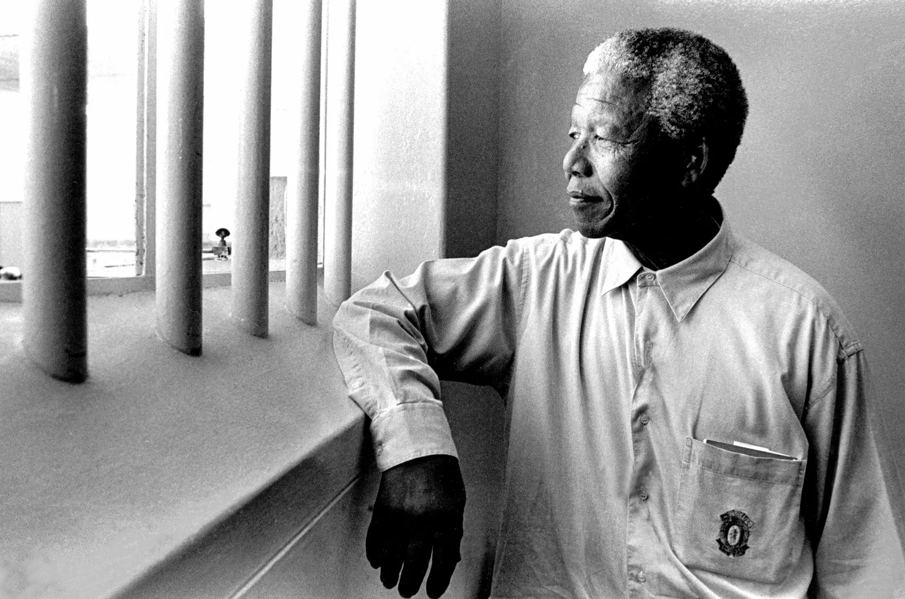

Nelson Mandela
A true aspiring leader who will never be forgoten

This is a picter of Nelson Mandela re-visiting Robben Island Prison 4 years after he was release
Here is the time line of Mandela's life:
Nelson Mandela's legacy is marked by his steadfast commitment to justice, equality, and reconciliation
If you wish to know more about Mandela here is a Wikipedia page link